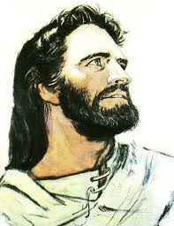

Tu Trípode siempre contigo
Piedad, Estudio y Acción. Anótalo cada día. Revísalo en tu Reunión de Grupo.

Peregrino APP nace de la experiencia real de un cursillista que quiere cuidar su Trípode, sus candidatos y su oración cada día.
Unirme al canal Descargar ahora
Cuenta atrás para el lanzamiento en mayo
Piedad, Estudio y Acción. Anótalo cada día. Revísalo en tu Reunión de Grupo.
Pon nombre a tu apostolado. Acompaña procesos reales. Celebra cuando alguien vive su Cursillo.

Rosario. Ángelus. Hora Apostólica. Siempre disponibles.

Si esta app te ayuda y quieres que siga siendo gratuita, puedes dejar una ofrenda. Como gesto de gratitud recibirás tu código de Peregrino.